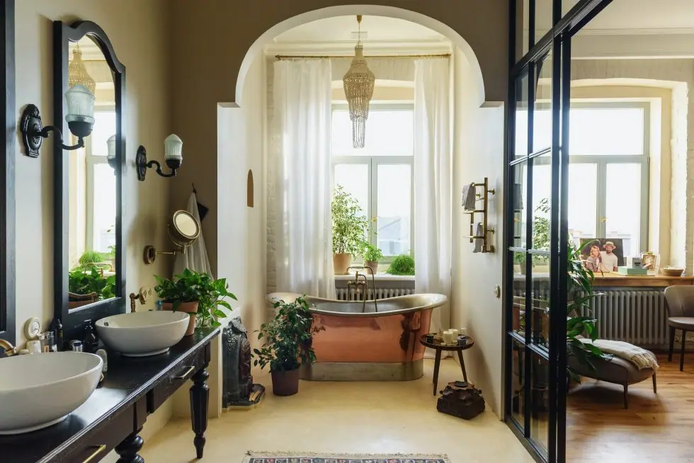

by Emily | Jun 18, 2023 | Bathroom , Copper , DIY , Interiors | 0 comments
From 19th century French palaces to modern day boutique hotels, freestanding copper bathtubs have long been associated with luxury and style. But they’re not the preserve of the palatial: copper baths can fit right in in a domestic setting. In bathrooms or even bedrooms, these standout tubs have the power to make an impressive statement, whatever the décor. Plus, on a completely practical level, they’re long-lasting, easy to clean and keep water warmer for longer. Here are some gorgeous examples of copper bathtubs .
1. A Stately Home
OK, copper bathtubs don’t have to be part of an opulent décor scheme, but they do suit antique grandeur. This one sits prettily in an en-suite in historic Athelhampton House in Dorset. The rich, flocked wallpaper was designed by non other than Pugin and that ornate brass mirror proves that, in the right setting, mixing metals really does work.
2. A Mountain Retreat
What could be more soothing than sinking into a warm bath after a day out on the mountains? This aged copper bathtub is nestled in a luxurious holiday home carved into the mountainside in Big Sky, Montana. We love how the diverse tones of the patinated copper mingle with the textures of the wooden beams and cool stone. Even if your home doesn’t happen to be carved into a mountainside, there’s a generous helping of neutral colour palette inspiration to be taken from this picture.
3. Farmhouse Chic
Copper baths aren’t just an inviting option for those who’ve been climbing up (or skiing down) mountains. Anyone who’s spent time in the great outdoors, whether tending to their garden or walking the dog, would benefit from a long soak at the end of the day. It’s why handcrafted copper bathtubs are such a popular choice in rural, farmhouse-style décor. Here, the shimmering finish on this polished copper bathtub is offset by a humble background of wood panels in calming cream. Horseshoes add to the rural look.
4. A Modern-Day Take
Copper bathtubs might have a long history, but that doesn’t mean they can’t look good in a contemporary bathroom design. This modern tub is a perfect case in point. Thoughtful sconces match the matte black freestanding tap, while the sage green geometric tiles make a strong colour contrast to the deep orange tones of the metal. The bath itself is chunky and minimal, carrying our iconic tub into the 21st century in style.
5. Dark & Moody
The dark and moody décor trend isn’t going anywhere, and this bathroom design welcomes it with open arms. The grey tiles and stormy-coloured walls and ceilings give the space a serious look that lets the freestanding copper tub truly dazzle. Other things we love here are how the wooden details pick up the colour of the bathtub, and the way the monochrome floor tiles are reflected in the mirror shine of the polished copper.
6. Very Verdigris
This gorgeous tubs takes ageing to the max with its vivid Verdigris effect. Verdigris is the turquoise-coloured coating that appears on copper when it’s exposed to the elements – think pennies when they get wet, or old copper statues and roofs that have turned a minty green. By hand-ageing the copper (something we specialise in), it’s possible to speed up time. The result? A unique, vintage colour pop, without having to wait decades for it to happen.
7. On the Tiles
As we’ve already seen, one of the great things about polished copper baths is their ability to reflect the flooring around them. It’s why a carefully-chosen floor and a gleaming copper tub make such a good pairing in bathroom design, with very little need for much else in the way of décor. Brightly-coloured Spanish, Portuguese and Moroccan-inspired tiles (or even lino flooring with a tile effect) make a brilliant backdrop for a statement copper tub.
8. Shades of Blue
We’ve said it before and we’ll undoubtedly say it again: blue and copper are meant to be together. It’s because blue and orange are opposite each other on the colour wheel, meaning this colour couple complement each other beautifully. Choose from a multitude of blue hues to pair with copper and you can’t go wrong. This clever design harnesses three of them: through flooring, wooden panelling and painted walls. If your bathroom design is based on blue, a copper tub is bound to shine.
9. In the Boudoir
Nothing says ‘luxury accommodation’ quite like a bedroom bathtub. And this freestanding copper number in an uber-cool Amsterdam mansion really pulls out the stops. Yes, blue is the ideal match for copper, but it also looks exceptionally handsome next to green, as this handsome tilework proves. Once again, the tones of the wood here have been carefully considered to match the copper. Why save soaking in a sumptuous bedroom tub for boutique hotels?
10. The Shining Centrepiece
Copper baths work best as a focal point when they’re placed right in the centre of a room, for maximum impact. This one sits in its very own alcove, framed by a dramatic arch. The geometric tiles not only introduce our colour friend blue to the scheme, but are reminiscent of a Moroccan or Turkish bath. Imagine feeling as though every bath you took at home was like being in an indulgent spa. Whatever the aesthetic, copper baths really do have the power to make every bath-time feel like a special treat.
Feeling inspired? Click the link to find out more about our beautiful handmade, freestanding copper bathtubs.
Products


If you can dream it, we’ll make it.
Bars, balustrades, staircases, worktops, cladding and pieces that don’t have a name yet. Our designers and craftspeople work in brass, copper, zinc and steel, and alongside wood.